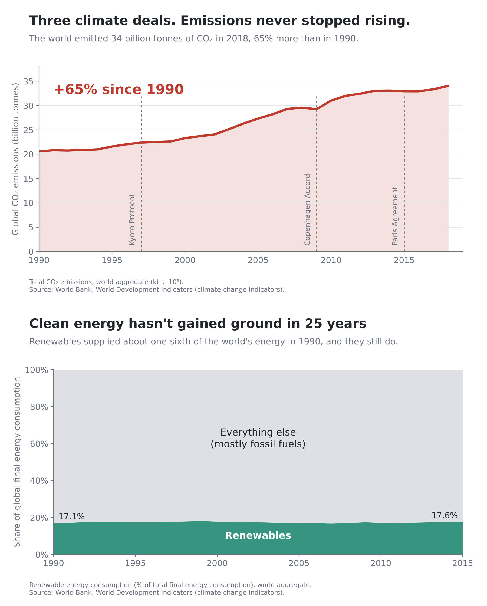

Proposition: The world is making real progress on cutting carbon emissions.
Both visualizations use the World Bank World Development Indicators for climate change (world totals and selected countries, 1990 to 2018), from the cleaned indicator repository linked in the assignment.
FOR the Proposition

Design Decisions and Rationale:
- Showing carbon per dollar instead of total emissions. Score −2. I plotted CO2 per dollar of GDP, which dropped 33% even though total emissions went up 65% over the same years. The title says the economy is "decarbonizing," which is technically true, but most people will read it as the world emitting less. I tried emissions per person first, but that went up 15% since 1990, so it was no help for this side.
- Indexing to 1990 and starting the y axis at 60. Score −1. I turned the values into an index where 1990 equals 100, which makes the change easy to read but hides the actual units. Starting the axis at 60 instead of 0 makes the drop take up most of the chart. I left the axis labeled, so someone looking closely can still see the truncation.
- Using 2005 as the starting year for the country comparison. Score −1.5. I calculated each country's percent change from 2005 to 2018. That year is close to the peak for the United States and Japan, so every bar comes out negative. If I had started at 1990, the United States would be up 3% and Japan would be up 1%.
- Only showing advanced economies. Score −1.5. China and India are not in the bar chart, even though their emissions grew 77% and 114% over the same period. The subtitle says "every major advanced economy," which is accurate for the countries shown, so the slant is hard to call out. Adding China and India would have flipped the whole message.
- Green color, exact labels and a source note. Score +1.5. Green reads as good news, and printing the exact percentages and the World Bank source on the chart makes it look trustworthy. These choices are honest on their own, but they also lend credibility to the selective framing above.
AGAINST the Proposition

Design Decisions and Rationale:
- Plotting total emissions on an axis that starts at zero. Score +2. Total CO2 is what actually drives warming, so I converted kilotons to billions of tonnes and calculated the 65% growth since 1990. Starting the axis at zero shows the increase at its true scale. This was the most honest choice in the project and also the most convincing one, since I didn't need to exaggerate anything.
- Marking Kyoto, Copenhagen and Paris. Score −0.5. The dashed lines invite the reader to judge each agreement by what happened next and conclude that they all failed. That is a fair question to raise, but it is slanted because none of these deals set a binding global cap, and Paris only took effect at the end of 2016.
- The title "Emissions never stopped rising." Score −1. The title is punchy and matches the overall trend, but it isn't literally true. Emissions dipped in 2009 and were flat in 2015 and 2016. I considered "Emissions keep rising," which is more accurate, but "never stopped" sticks better.
- Showing the renewable share on a full 0 to 100% scale. Score −1. I calculated everything that isn't renewable and stacked it as a big gray block above the green band, so 17% looks small and flat. I also picked total energy use instead of electricity, where the renewable share actually rose from 19% to 22%. Both are real World Bank numbers, and I picked the one that fits this side.
- Red for emissions and green for renewables. Score +0.5. Red makes the rising line feel like a warning. Keeping renewables green ties back to the color on the FOR side, so the "good" part visibly isn't growing. The colors add emotion, but they don't change any values.
Final Reflection
The AGAINST side was way easier to make than I expected. Total global emissions on a regular chart starting at zero was convincing without any tricks, so most of my effort went into the title and the annotations. The FOR side was the hard one. Almost every honest measure of the overall trend goes up, so to make a convincing case I had to change the question from "are emissions falling?" to "is each dollar of output getting cleaner?" or "are rich countries cutting back?" What surprised me most is that none of the FOR charts have a single wrong number on them. Every value is accurate and sourced. All of the persuasion came from which metric, which starting year and which countries I decided to show.
That changed how I think about ethical visualization. I'd now say a chart is ethical if the reader would come to roughly the same conclusion after seeing the data I left out. By that test, the carbon per dollar chart and the 2005 bar chart both fail, because anyone who saw total emissions or China and India would probably flip their conclusion. The total emissions chart passes, since adding the carbon per dollar trend or the drop in rich countries adds nuance but doesn't change the takeaway.
I don't think there's a clean line based on technique alone. A truncated axis, an index or a hand picked starting year can be totally fine in one chart and misleading in another. The line I'd draw is the gap between what a chart literally shows and what it leads people to believe. Strong colors, confident titles and annotations are fair game when they point at the main pattern in the data. They become deceptive when they only work because the reader doesn't know what got filtered out or swapped.